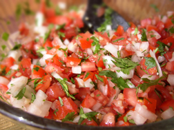
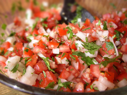

If there are salsa enthusiasts in this world, I might just be one of them.
Salsa is one of the simplest additions to a meal, but it can really make the difference between "eh" and "MMM!" There are a ton of varying styles of salsas ranging from chunky to liquidy and not-so-spicy to burn-your-mouth-off. Pico de gallo is one of my favorites and probably the easiest salsa to make. So let's learn how to make some!
First you need all of the ingredients, so see the box to the left. It's simple, but it won't be the same without one of these ingredients. Now get an extra large bowl.
Begin dicing the tomatoes. In terms of quantity, you'll want mostly tomatoes in the salsa. Plan accordingly and be liberal with your use of tomatoes.
Now the jalapenos - WARNING - do not cook the jalapenos. It'll tone down their spicy-ness.
Next, chop the jalapenos as fine as you can. This is the secret to a good batch of pico de gallo.
Up next, chop the onions! Don't cry in the pico de gallo. Also chop the cilantro as fine as you can.
If it's not already in the bowl together, add it all in! Then mix it around. You want the juices to intermingle.
Finally add the chopped garlic, a few pinches of salt, and about half to a full cup of lime juice. These each add flavor and serve a second purpose of preserving the other ingredients.
Now get a chip and enjoy your creation! Sabrosa!!!
 
